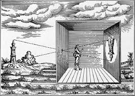
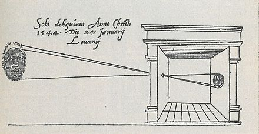
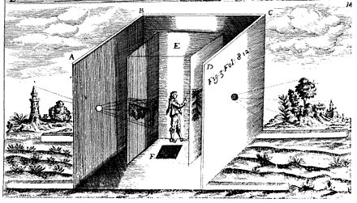

Humble beginnings
camera obscura
The first form of photography begun as an effect named the Camera Obscura Effect, also known as a pinhole camera. This effect is where light rays enter through a small hole in a dark box and project an inverted image of the environment from outside on a wall inside the box.
The first written mentions for the principles behind the Camera Obscura Effect can be found in a Chinese text called Mozi. This text dates back to the 4th century BC being credited to Mozi, a Chinese Philosopher. In the writings, it is explained that the image in a camera obscura is inverted by an intersecting point that collects light. The light coming from the foot of a person gets partly hidden below the pinhole and partly forms the top of the image. The light from the head is partly hidden above the pinhole and form the lower part of the image.
The Greek philosopher Aristotle or maybe a follower of his, touched on the formation of pinhole images as a subject in the work called Problemata - book xv, which is a book with a collection of problems written in a question-and-answer format. In the work, it is questioned "Why is it that when the sun passes through quadri-laterals, as for instance in wickerwork, it does not produce a figure rectangular in shape but circular?".
They also asked: "Why is it that an eclipse of the sun, if one looks at it through a sieve or through leaves, such as a plane-tree or other broadleaved tree, or if one joins the fingers of one hand over the fingers of the other, the rays are crescent-shaped where they reach the earth? Is it for the same reason as that when light shines through a rectangular peephole, it appears circular in the form of a cone?"
The first camera obscura to be well experimented and studied is by Arab physicist, Ibn al-Haytham. He did lots of experiments with the effect and discovered that if the pinhole is smaller than the image sharpness would increase and in his written work, Kitab al-Manazir (Book of Optics) written from 1011 to 1021. He was the first person to explain that vision occurs by light that reflects off of objects and passes to a person's eyes. He also argued that vision occurs in the brain, and that it is subjective and affected by a person's experience.
Image by Joortje1
{kind=link}
One of the oldest published drawings of a camera obscura is found in Gemma Frisius' 1545 book 'De Radio Astronomica et Geometrica', where he illustrated and describes how he used it to study the Jan 24th of 1544, solar eclipse. Italian polymath Gerolamo Cardano is described using a glass disk in a camera obscura within his 1550 book named De subtilitate, vol 1, Libri IV. He suggested using the glass disk to improve clarity in the image and to use white paper as a projection screen so colours wouldn't be dull.
Giambattista della Porta suggested using the camera obscura with a convex lens to project an image onto paper to use as a drawing aid in his 1558 first edition of his book series 'Magia Naturalis'. This helped spread the knowledge of the camera obscura. Friedrich Risner, a German mathematician, proposed a portable camera obscura drawing aid in 1572. Its design was a lightweight wood hut with lenses in all four of its walls, the lenses would project the images of the surroundings onto a paper cube in the middle. The whole thing would be carried on two wooden poles.
Image by Joortje1
{kind=link}
In 1585, Giambattista Benedetti proposed the idea to use a mirror at a 45-degree angle to project the image upright. It left the image reversed, but this would become a common practice in later camera obscura models. In the 1589 second edition of 'Magia Naturalis', Giambattista della Porta added a biconvex lens to the description of the camera obscura. He also detailed the use of the camera obscura to project banquets, plays, battles or anything desired onto white sheets for entertainment.
_Quarteley_(g)_-_Cours_de_Physique_(A._Ganot).jpg){kind=link}